HMI 사용 가이드¶
HMI는 주행 정보와 주변 환경을 확인하고 지도에서 목적지·경유지를 선택하는 차량용 화면입니다. 이 가이드는 화면의 표시 의미, 지도 조작, 설정과 기록 기능 사용 방법을 안내합니다.
PDF 사용 설명서에서 화면별 번호 해설을 함께 볼 수 있습니다.
1. 시작과 화면 확인¶
차량의 정해진 시작 절차를 완료하면 HMI가 자동으로 열립니다. 화면에는 중앙의 3D 주행 장면, 왼쪽의 속도·제어 상태, 오른쪽 위 미니맵과 하단 도구가 표시됩니다.
- 지도와 차선, EV9 차량 모델이 나타날 때까지 기다립니다.
- 현재 기어와 속도를 확인합니다.
- 자율주행 중 또는 수동 운전 중 문구로 현재 제어 방식을 확인합니다.
- 미니맵에서 현재 위치 화살표와 예정 경로를 확인합니다.
- 경고가 보이면 설정 → 시스템 상태에서 상세 상태를 확인합니다.
HMI의 기본 역할은 주행 정보 확인, 목적지·경유지 선택과 기록 기능 사용입니다. 운행 시작·정지는 차량의 정해진 운용 절차를 따릅니다. 지도나 차량 정보가 보이지 않을 때는 문제 해결을 참고합니다.
2. 제어 상태 읽기¶
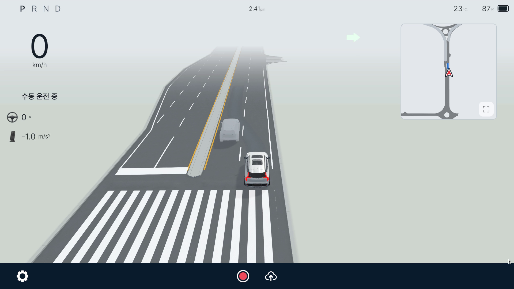
| 문구 | 의미 |
|---|---|
| 제어 준비 중 | 차량 제어가 아직 준비되지 않음 |
| 자율주행 대기 중 | 제어 대기 상태이며 차량 속도 0을 뜻하는 문구가 아님 |
| 자율주행 준비 완료 | 자율주행 사용 가능, 실제 제어 활성화는 별도 |
| 자율주행 중 | 자율주행 모드에서 Autoware 제어가 활성화됨 |
| 수동 운전 중 | 수동 제어 모드, 현재 속도와 별도 정보 |
| 원격 운전 중 | 원격 제어 모드 |
| 운전 모드 전환 중 | 제어 모드 변경 진행 중 |
| 상태 확인 중 | 필요한 상태가 아직 확인되지 않음 |
| 비상 정지 | 긴급 상태, 현장 비상 절차에 따라 확인 |
현재 속도 0 km/h는 이동 여부, 수동 운전 중은 제어 방식입니다. 두 표시가 함께 나와도 모순이 아닙니다. 자율주행 여부는 왼쪽 제어 상태 문구로 확인합니다. 하단바는 화면 모드에 따른 색상을 유지합니다.
3. 메인 주행 화면 읽기¶
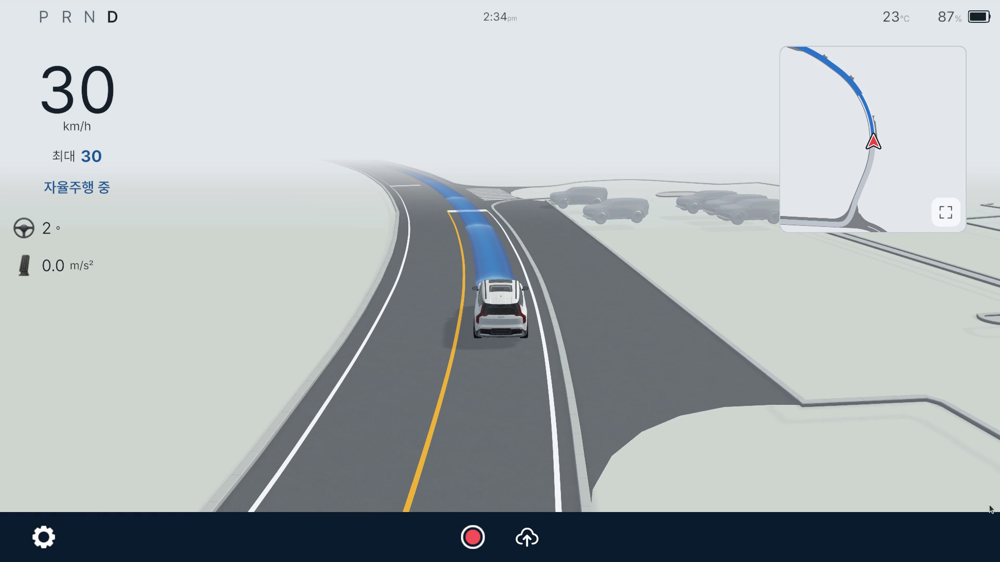
| 위치 | 표시 내용 | 읽는 방법 |
|---|---|---|
| 상단 왼쪽 | P·R·N·D | 강조된 글자가 현재 기어입니다. |
| 상단 중앙·오른쪽 | 시간, 외기 온도, 배터리 잔량 | °C와 % 단위를 확인합니다. |
| 왼쪽 큰 숫자 | 현재 속도 | 단위는 km/h입니다. |
속도 아래 최대 |
주행 목표 상한 | 현재 속도와 구분하며, 도로의 법정 제한 속도라고 단정하지 않습니다. |
| 왼쪽 상태 문구 | 현재 제어 상태 | 자율주행·수동 운전·준비·대기·긴급을 구분합니다. |
| 왼쪽 조향·페달 아이콘 | 조향각과 가감속 | 단위는 °와 m/s²입니다. |
| 중앙 | EV9 모델, 도로·차선, trajectory, 인지 객체 | 차량 위치와 진행 방향이 지도에 맞는지 확인합니다. |
| 오른쪽 위 | 미니맵 | 전체 경로와 현재 위치·방향을 확인합니다. |
| 하단 | 설정, 수동 녹화, 일괄 업로드 | 기능별 사용 절차와 실제 응답을 확인합니다. |
하단바는 각 화면 모드의 자율주행 표시 색상을 기준으로 고정됩니다. 하단바 색으로 자율주행 여부를 판단하지 않고 자율주행 중 또는 수동 운전 중 문구를 확인합니다.
방향지시등과 차량 표시¶
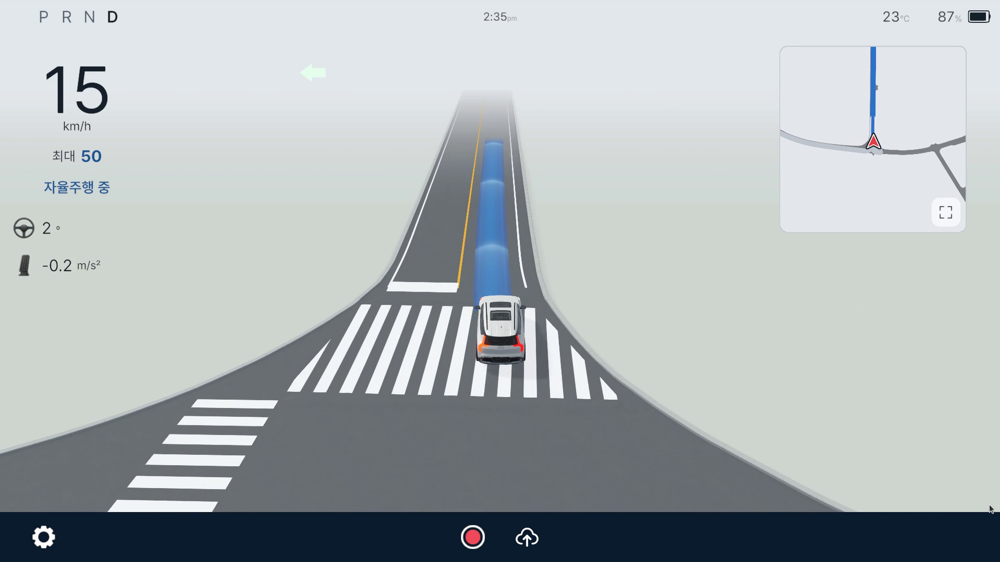
방향지시등은 주행 화면 위쪽 좌·우 화살표로 점멸합니다. 수신된 차량 상태를 표시하며 HMI에서 조작하는 버튼이 아닙니다. EV9 모델의 방향지시등·브레이크등도 해당 입력에 따라 표시됩니다.
4. 전체 경로와 trajectory¶
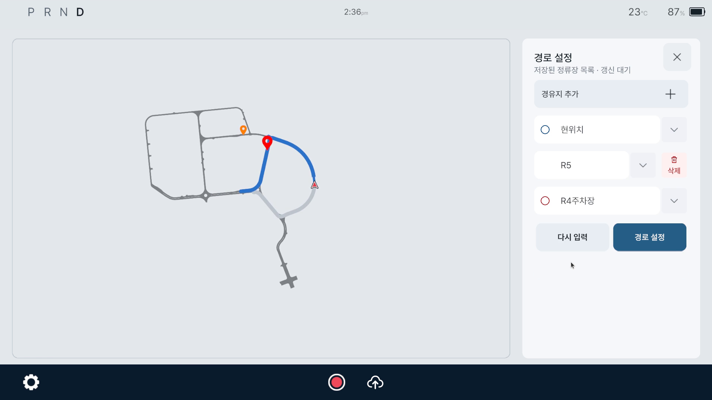
미니맵의 전체 경로는 목적지까지의 예정 경로입니다. 남은 예정 구간은 파란색, 현재 위치 이전 구간은 옅은 회색으로 표시합니다. 회색은 위치를 경로에 투영한 표시이며 주행 완료를 별도로 인증하는 정보가 아닙니다.
trajectory는 현재 구간의 최적화된 주행 궤적입니다. 전체 경로 위에 같은 너비로 겹쳐 표시하며, 현재 위치의 코랄 레드 화살표는 두 경로 위에 표시합니다. 전체 경로와 trajectory의 길이는 서로 다를 수 있습니다.
3D 주행 화면의 trajectory는 차량 앞에서 시작하는 반투명 리본입니다. 자율주행 제어와 유효한 전진 속도가 확인되면 빛이 진행 방향을 따라 흐릅니다. 정지·후진·수동·긴급 또는 속도 미확인에서는 흐름이 멈춥니다. 이 애니메이션은 방향 안내이며 실제 주행 거리나 완료율을 뜻하지 않습니다.
사람·차량 객체는 수신된 인지 결과입니다. 누락·지연·분류 변경이 있을 수 있으므로 실제 주변과 대조합니다.
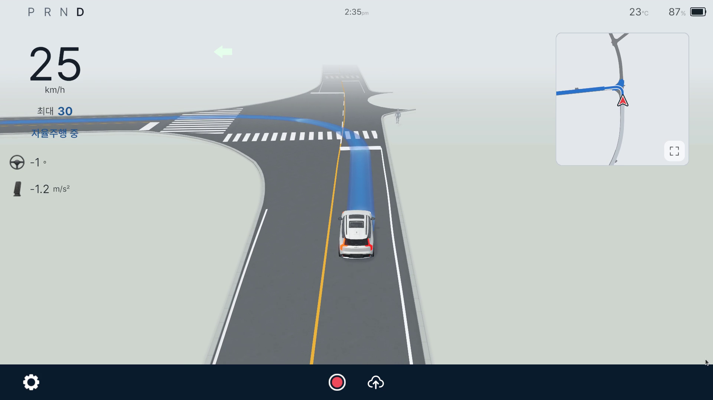
5. 시스템 상태와 경고¶
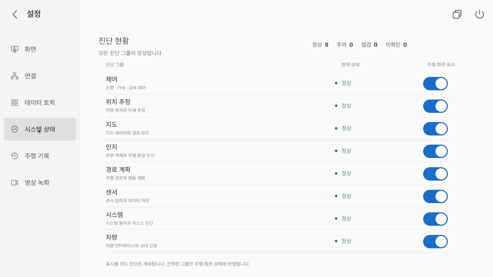
선택한 진단 범주가 모두 확인된 정상 상태이면 주행 화면의 진단 카드를 숨깁니다. 주의는 주황 삼각형, 점검 필요는 빨간 삼각형, 미수신·관측 단절은 중립색 물음표와 미확인으로 표시합니다. 정상 상태의 상세 정보도 설정 → 시스템 상태에서 확인합니다.
| 상태 | 의미 | 확인할 내용 |
|---|---|---|
| 정상 | 해당 진단 범주가 정상으로 수신됨 | 실제 차량·현장과 함께 확인 |
| 주의 | 경고 수준의 진단 | 원인과 악화 여부 |
| 점검 | 오류 수준의 진단 | 상세 원인과 소유 패키지 로그 |
| 미확인 | 미수신·관측 단절·확인할 범주 없음 | 연결과 새 데이터 수신 |
주행 화면에 표시할 범주는 설정 → 시스템 상태 → 주행 화면 표시에서 선택합니다. 표시를 꺼도 해당 오류가 해결되지는 않습니다.
긴급 상태는 별도의 emergency 신호를 따릅니다. 오류 개수만으로 긴급정지를 만들거나 해제하지 않습니다. 빨간 긴급 표시나 긴급 패널이 나타나면 현장 비상 절차에 따라 차량 상태를 확인합니다.
6. 목적지와 경유지 선택¶
- 미니맵 우하단의 확대 버튼을 눌러 큰 지도와 경로 설정 패널을 엽니다.
- 현위치와 차량 위치 화살표가 맞는지 확인합니다.
- 목적지 선택 목록에서 목적지를 선택하고 빨간 마커를 확인합니다.
- 필요하면 경유지 추가 +를 누르고 경유지를 선택합니다. 주황 마커와 방문 순서를 확인합니다.
- 실운행에서 승인된 경로를 적용할 때 경로 설정을 한 번 누릅니다.
- 새 전체 경로와 Planning·운행 상태가 실제로 갱신됐는지 확인합니다. 패널 우상단 ×로 닫습니다.
선택 마커가 보이는 것은 새 경로 생성이 완료됐다는 뜻이 아닙니다. 전체 경로는 경로 계획 결과를 수신해 표시합니다. bag 재생에서는 목적지·경유지 선택까지만 확인하며 경로 설정 버튼을 누르지 않습니다. 재생 중 선택한 목적지가 기존의 기록 경로를 자동으로 바꾸지는 않습니다.
휠로 지도를 확대·축소하고 드래그로 이동합니다. 삭제는 해당 경유지 행을 제거하며, 다시 입력은 현재 목적지·경유지와 경로 표시를 초기화합니다. 운행 중 경로를 임의로 바꾸지 않습니다. 응답이 없으면 연속 입력 대신 연결·Planning과 새 경로 수신을 확인합니다.
목록은 서버 응답을 받으면 갱신합니다. 저장된 정류장 목록 · 갱신 대기는 이전에 저장한 목록을 표시하고 최신 목록은 아직 확인하지 못했다는 뜻입니다. 실패한 응답은 저장된 목록을 지우지 않습니다. 목적지·경유지가 삭제되거나 좌표가 바뀌면 다시 선택해야 합니다. 목록을 저장하는 것은 경로 실행과 다릅니다.
7. 하단 도구와 설정 6개 탭¶
하단 왼쪽 톱니바퀴로 설정을 엽니다. 왼쪽 위 화살표로 주행 화면에 돌아갑니다. 오른쪽 위 겹친 사각형은 창/전체화면 전환, 전원 아이콘은 HMI 종료이며 차량 정지 버튼이 아닙니다. 창 모드에서는 운영체제의 최소화·최대화·닫기 버튼도 표시됩니다.
| 탭 | 확인·설정 내용 | 적용 방식 |
|---|---|---|
| 화면 | 라이트·다크 모드 | 선택 즉시 적용, 같은 PC의 다음 실행에도 유지 |
| 연결 | 연결 방식과 ROS 도메인 | 현재 배포 연결 확인 |
| 데이터 토픽 | 토픽별 수신 상태·지연, 수신·녹화 토글 | 표시 구독과 기록 대상을 구분 |
| 시스템 상태 | 진단 현황, 범주별 상태, 주행 화면 표시 토글 | 표시 필터이며 오류 해결과 구분 |
| 주행 기록 | 주행 목적, 위치 기록 간격(m), 녹화 시작 토픽 | 승인된 값으로 적용, DLS 결과 확인 |
| 영상 녹화 | 저장 장치, 서버 주소, 접속 세션, 녹화 시작 토픽, 연속 녹화 | 승인된 값으로 적용, 실제 저장 결과 확인 |
화면 · 라이트와 다크¶
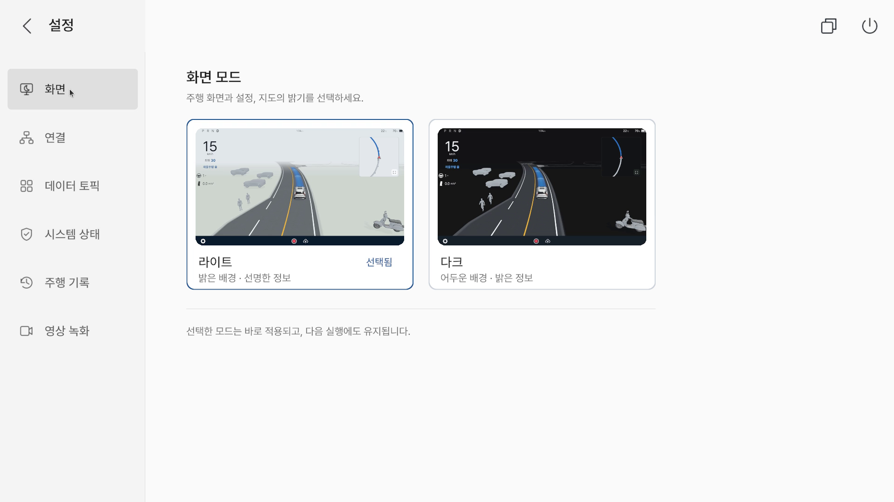
선택한 카드는 테두리와 선택됨으로 구분합니다. 처음 실행할 때는 라이트 모드를 사용합니다. 두 모드는 같은 차량 상태와 기능을 표시합니다.
| 라이트 | 다크 |
|---|---|
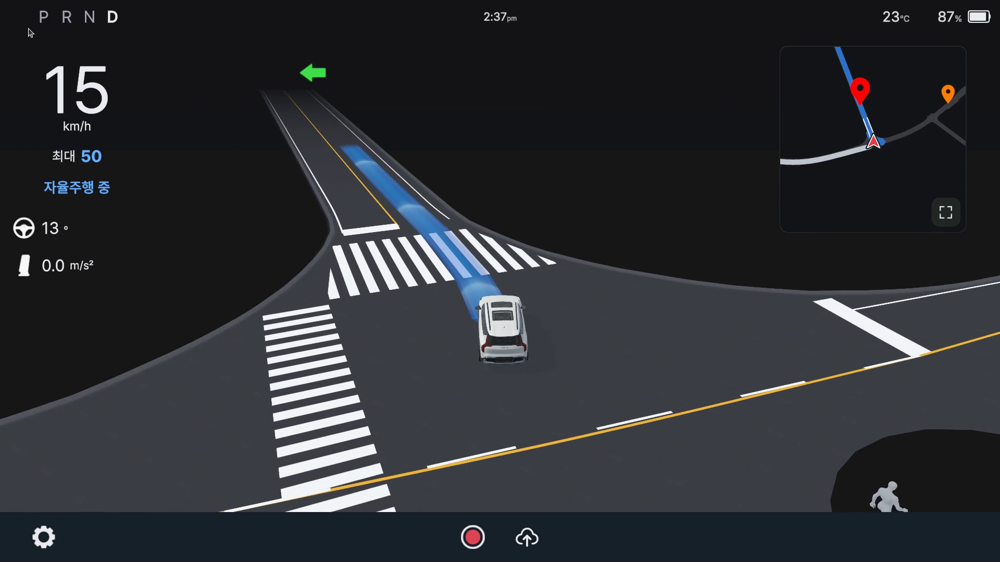 |
연결과 데이터 토픽¶
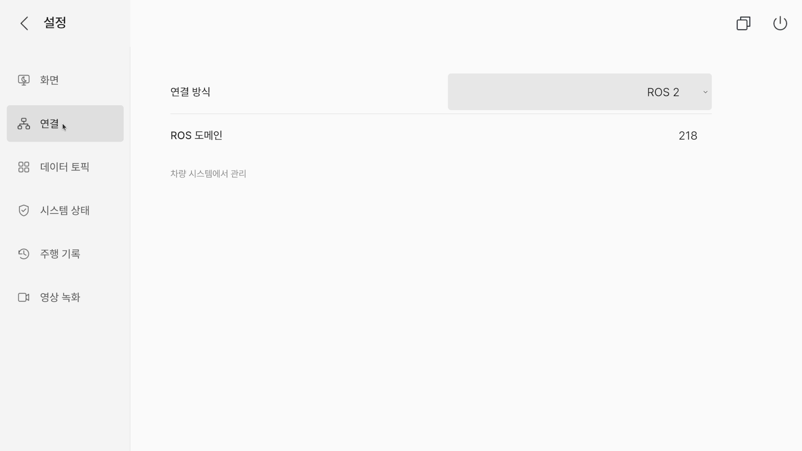
연결 탭에서 연결 방식과 ROS 도메인을 확인합니다. 연결 값은 차량 설치 구성에 맞춰 제공됩니다. 데이터가 보이지 않을 때 확인용으로 사용하며, 운용 중 값을 임의로 변경하지 않습니다.
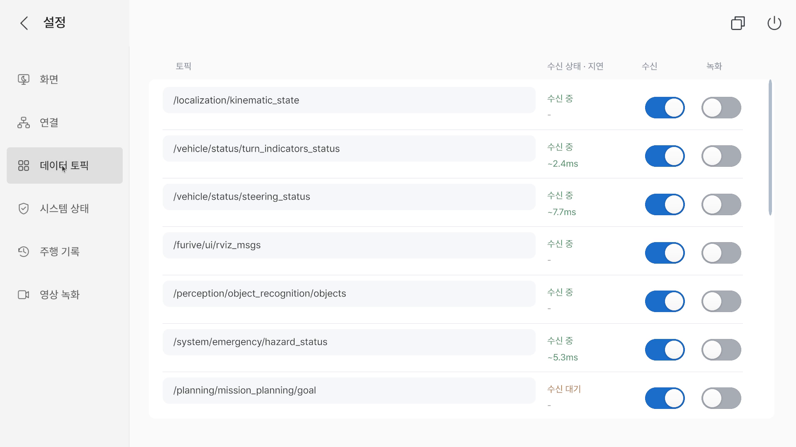
토픽은 ROS 이름, 수신 상태·지연은 수신 중·수신 대기·꺼짐과 최근 메시지 지연입니다. 수신은 HMI 표시용 구독, 녹화는 기록 대상 포함 여부이며 서로 별개입니다. 목록 아래로 스크롤하면 나머지 토픽을 확인합니다. 수신 대기를 정상 수신으로 판단하지 않습니다.
주행 기록과 영상 녹화¶
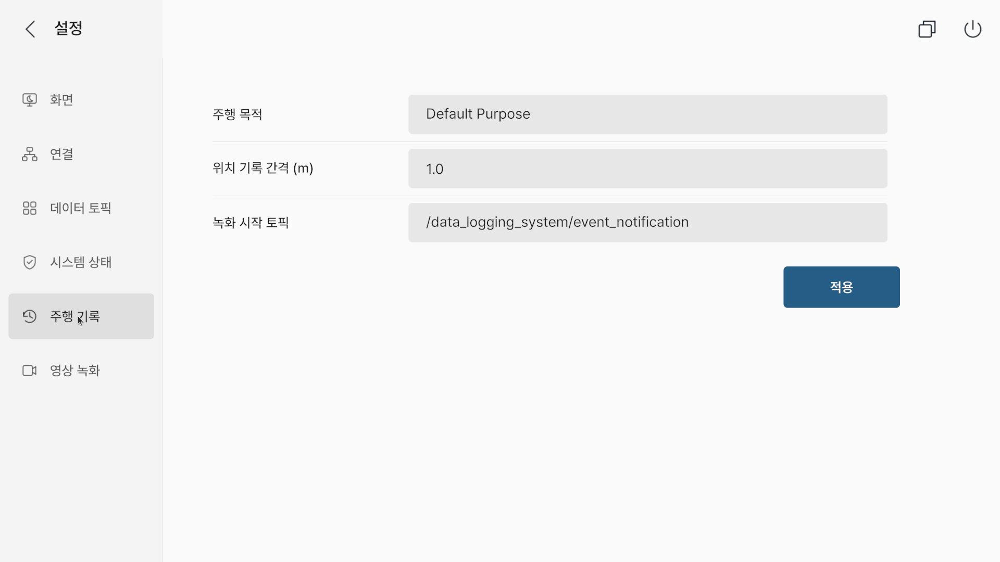
주행 목적에는 승인된 업무 표현을 사용합니다. 위치 기록 간격의 단위는 m입니다. 녹화 시작 토픽은 DLS와
합의된 값인 /data_logging_system/event_notification을 사용합니다. 적용 후 DLS의 실제 설정과 결과를 확인합니다.
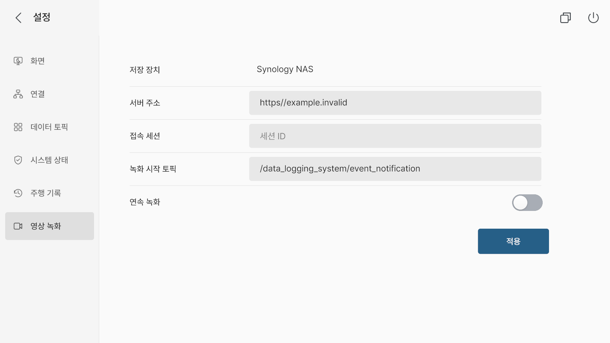
저장 장치·서버 주소·접속 세션은 구성된 차량에서만 사용합니다. 문서의 서버 주소는 예시입니다. 연속 녹화는 저장 용량·보존 정책을 확인한 뒤 선택합니다. 세션 ID와 credential은 공유 화면에 노출하지 않습니다.
8. 녹화와 업로드 사용¶
주행 화면 하단 중앙에는 수동 녹화와 일괄 업로드 버튼이 있습니다. 기록 기능을 사용하기 전에 설정 → 주행 기록 / 영상 녹화에서 목적, 저장 장치와 기록 조건을 확인합니다.
수동 녹화¶
- 하단의 빨간 원 버튼을 눌러 수동 녹화 시작을 요청합니다.
- 기록 시스템(DLS)에서 녹화 중 상태와 새 기록 생성을 확인합니다.
- 필요한 구간을 기록한 뒤 같은 버튼을 눌러 중지를 요청합니다.
- DLS에서 녹화 종료와 저장된 기록을 확인합니다.
일괄 업로드¶
- 저장소 연결과 업로드할 기록을 확인합니다.
- 하단의 구름·위쪽 화살표 버튼을 눌러 저장된 기록의 일괄 업로드를 요청합니다.
- DLS에서 전송 진행 상태와 완료 결과를 확인합니다.
버튼 입력만으로 녹화나 전송 완료가 확인되지는 않습니다. 세션 검색·재생·NAS 전송·보존 설정은 DLS 사용 가이드를 참고합니다.
9. 문제 해결¶
| 증상 | 먼저 확인 | 다음 조치 |
|---|---|---|
| HMI 창이 없음 | 배정된 PC, 그래픽 세션, 패키지 상태 | 로그 확인 후 furive service restart |
| 지도·차선 없음 | 지도 수신, 위치 추정, 시스템 상태 | 해당 입력과 의존 패키지 확인 |
| 차량·경로 불일치 | pose·heading, 전체 경로·trajectory | 안전한 상태에서 정합과 연결 조사 |
| 수신 대기 지속 | 데이터 토픽, ROS 도메인·DDS | Autoware/bag 입력과 전달 경로 확인 |
| 미확인 표시 | 새 진단 수신과 표시 범주 | 연결과 시스템 상태 상세 확인 |
| 경로 선택 후 기존 경로 유지 | 경로 요청과 새 Planning 결과 | 마커 선택과 적용 완료를 구분 |
| 녹화·업로드 상태 불변 | DLS 연결과 작업 응답 | 실제 저장·전송 결과 확인, 연속 요청 금지 |
관리자 확인¶
화면 조작으로 해결되지 않을 때 관리자는 다음 명령으로 서비스 상태와 로그를 확인합니다. 서비스 재시작은 운행·기록 작업에 영향을 줄 수 있으므로 작업이 종료된 상태에서 수행합니다.
10. 보안·개인정보¶
운용 중 연결·녹화·저장소 값을 임의 변경하지 않습니다. 목적지·경유지와 주행 경로는 위치 정보이며, 화면과 기록의 공유 범위는 고객 정책을 따릅니다. 개인정보·세션 ID·credential을 캡처·문서에 넣지 않습니다. 업로드는 승인된 저장소와 계정으로 수행하며 보존기간·접근권한·삭제 절차를 따릅니다.
11. 사용을 마칠 때¶
- 정해진 운행 종료 절차에 따라 차량이 정차했는지 확인합니다.
- 기록 중이면 정상 중지하고 DLS에서 저장 결과를 확인합니다.
- 업로드를 요청했다면 DLS에서 완료 여부를 확인합니다.
- HMI를 닫으려면 설정 화면 오른쪽 위 전원 아이콘을 누릅니다.
HMI 종료는 화면을 닫는 동작입니다. 차량 정지와 기록 종료는 각각의 운행·기록 절차로 확인합니다.
12. 부록 · 설치와 연결 구조¶

EV9는 A-ECU와 HMI-ECU의 2PC 분산 구성입니다. HMI는 HMI-ECU에서 실행됩니다. A-ECU의 Autoware ROS 2 데이터는 ROS Domain Bridge와 Zenoh Bridge를 거쳐 HMI-ECU의 로컬 ROS 영역에 도착합니다. HMI는 배포물에 포함된 native ROS 2 adapter로 로컬 DDS에 직접 연결합니다. ROS domain과 DDS 설정은 Furive OS가 전달하며 별도 rosbridge 서버는 필요하지 않습니다. 상세 연결·복구 기준은 패키지 계약을 따릅니다.
PC 사이 Zenoh 경로는 QUIC/UDP :7447, TLS 1.3 mutual TLS이며 설치가 배포한 node certificate 검증과 exact
peer-CN ACL을 통과해야 합니다. Furive OS main↔edge 상태·명령도 별도의 TCP :15001/TLS 1.3 mTLS 제어면을
사용합니다. HMI의 기록 버튼은 같은 PC의 Integration Gateway를 통해 DLS에 요청을 전달하지만, DLS의
녹화·세션·전송 상태를 HMI가 소유하지 않습니다.
13. 부록 · 실행 환경¶
| 항목 | 현재 기준 |
|---|---|
| 실행 위치 | HMI-ECU (A-ECU와 분산 구성) |
| package 이름 | hmi |
| 배포 형식 | amd64 Docker image에서 signed Unity payload를 host graphical session에 materialize |
| 자동 시작 | 설치 구성의 autostart.enabled: true |
| 의존 package | integration-gateway |
| 화면 배치 | 모니터 2개 이상이면 가장 오른쪽 모니터 전체화면 |
| health | process check, 시작 유예 30초 |
| 업데이트 | stop-start, 실패 시 rollback |
| 기본 제어 경계 | HMI는 상태 표시·목적지 선택, 운행 시작·정지는 차량 운용 절차 사용 |
HMI source 개발은 독립 HMI 저장소에서 수행하고 Furive OS는 package 실행, health, 배포와 화면 session을 연결합니다. Unity binary를 설치 경로에서 직접 바꾸거나 root 저장소에 HMI 상태 정책을 복제하지 않습니다.